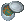
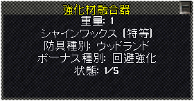
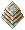
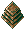
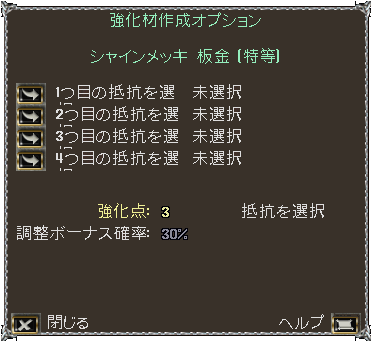
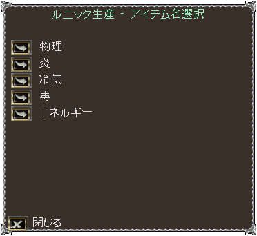
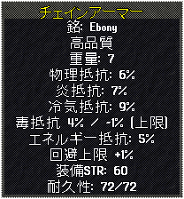
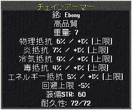

防具強化材
１．防具強化材の概要
パブリッシュ81より、もともと瞑想を阻害する防具を強化し、抵抗値上限を上昇（回避上限は低下）または回避上限を上昇（抵抗値上限は低下）
することができるようになりました。
２．材料の入手および強化材の作成
強化材は2種類の材料により作られます
材料1（NPCから購入するもの）
 malleable alloy [鍛冶合金] ： NPC Blacksmith
malleable alloy [鍛冶合金] ： NPC Blacksmith- leather braid [皮ひも] ： NPC Weaver
- solvent flask [溶剤フラスコ] ： NPC Carpenter
材料2（NPCから購入できないもの）
トレジャーハント、宝箱のサルベージ（SOS）、商船、海賊船、街のコンテナからの盗み、Championボスから入手します。
-  polish [シャインメッキ] ： 鍛冶回避用（Plate, Chainmail, Ringmail, Samurai plate, Gargish plate, Dragon）
- scour [ハードメッキ] ： 鍛冶抵抗用（Plate, Chainmail, Ringmail, Samurai plate, Gargish plate, Dragon）
- wash [シャインコート剤] ： 裁縫回避用（Stud, Bone, Hide, Stud samurai）
- cure [ハードコート剤] ： 裁縫抵抗用（Stud, Bone, Hide, Stud samurai）
 gloss [シャインワックス] ： 大工回避用（Woodland, Gargish stone）
gloss [シャインワックス] ： 大工回避用（Woodland, Gargish stone）- varnish [ハードワックス] ： 大工抵抗用（Woodland, Gargish stone）
上記の材料には5つのランクがあります。
なお、上記の材料は、Publish83より入手可能となった強化材融合器を使うことで、ランクを上げることが可能です。
- Defense [良質]
- Protection [高級]
- Hardening [優良]
- Fortification [特等]
- Invulnerability [究極]
Refinement Amalgamator [強化材融合器]の使い方
強化材融合器は、同一種同ランクの強化材を複数混ぜ合わせ、1ランク上の強化材に変換するものです。
Publish83以降、クリーンアップの報酬品として入手することができます。
- 融合器と融合させる強化材を自分のバックパック内に用意する
- 融合器をダブルクリックし、強化材を指定する。下の画像のようなプロパティが表示される。なお、この時点で、融合材に入れた強化材は取り出せなくなる。
- 融合器に必要な分、強化材を投入する
- 1ランク上の強化材がバックパックに入る。融合器は未使用状態となり、別の融合が可能となる。
ランクアップに必要な強化材の数量
- Defense [良質]×2 → Protection [高級]
- Protection [高級]×3 → Hardening [優良]
- Hardening [優良]×4 → Fortification [特等]
- Fortification [特等]×5 → Invulnerability [究極]

強化材の作成
強化材は材料1と2をバックパックの1層目に置き、材料2をダブルクリックすると作成できます。
なお、polish [シャインメッキ]などの材料2は、対応するスキルが100.0以上なければ扱うことはできません。
- ×1＋×20 →  polished plating [シャインメッキ 板金]
- ×1＋×20 →  scoured plating [ハードメッキ 板金]
- ×1＋×20 → washed thread [シャインコート 糸]
- ×1＋×20 →
 cured thread [ハードコート 糸]
cured thread [ハードコート 糸]
- ×1＋×20 → varnished resin [シャインワックス 樹脂]
- ×1＋×20 → glazed resin [ハードワックス 樹脂]
３．強化材の使用
強化材はその適用対象に応じて、特定の鍛冶屋、裁縫屋および大工屋で使用します。
強化材と強化したい防具（瞑想可ではない）を持って行き、強化材を使用すると、材料のランクに応じた効果が得られます。
なお、1つの防具に対するメッキの回数に制限はありませんが、最後に使った強化材の効果しか反映されません。
強化材を使用できる場所
- 鍛冶(Trammel) ： The Hammer and Anvil [ハンマー＆アンビル], Britain
- 鍛冶(Felucca) ： The Warrior's Supplies [ウォリアーズサプライ], Cove
- 裁縫(Trammel) ： Adventurer's Clothing [アドベンチャラー洋服店], Trinsic
- 裁縫(Felucca) ： A Stitch in Time [ステッチインタイム裁縫店], Ocllo
- 大工(Trammel) ： Bloody Thumb Woodworks [ブラディサム木工品店], Yew
- 大工(Felucca) ： From Tree to You [フロム ツリー ツー ユー], Jhelom
強化材のオプション画面
強化材を防具に使用すると、オプション画面が表示されます。
ランクに応じて、上限を変更したい抵抗の種類を選択します。


強化材のランクと効果
強化材には5つのランクがありますが、ランクごとに上限を変更できる抵抗の箇所数が変わります。
下の画像は、シャインメッキ（左）およびハードメッキ（右）を使用した防具のプロパティを表示したものです。
抵抗上限の変更箇所数と回避上限の変化が1：1となっていることがわかります。
効果の強さ
- Defense [良質] : 上限変更1箇所
- Protection [高級] : 上限変更2箇所、2箇所目は30％の確率
- Hardening [優良] : 上限変更3箇所、3箇所目は30％の確率
- Fortification [特等] : 上限変更4箇所、4箇所目は30％の確率
- Invulnerability [究極] : 上限変更5箇所、5箇所目は15％の確率
効果の内容
- シャイン○○ : 抵抗上限減少（-1％×1〜5箇所）、回避上限上昇（+1〜+5％）
- ハード○○ : 抵抗上限上昇（+1％×1〜5箇所）、回避上限減少（-1〜-5％）
- 抵抗上限変化の限界 ： 1属性につき±5％
- 回避上限変化の限界 ： ±25％
使いこなしについては、装備品作成実践の防具のところにも記載しています。

